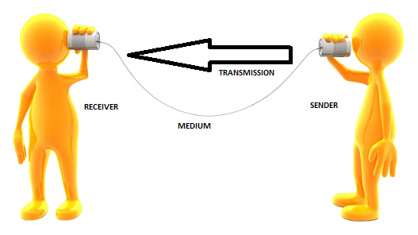
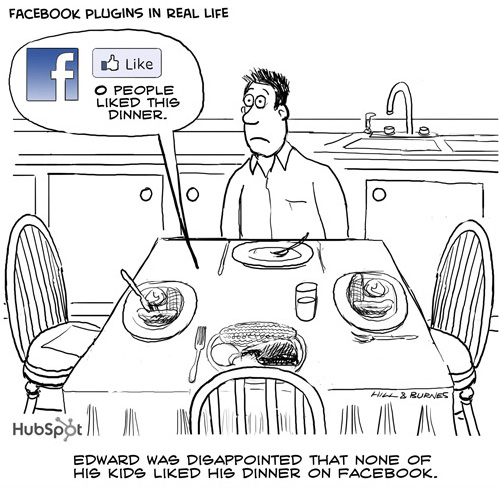

Communication comes from the Latin word “communicatio”
What the meaning of message and connection has.

[Image Source: http://ccna-routingswitching-ciscochamp.netai.net/1_6_Lecture-1-Introduction-to-Networking.html]words
voice pitch
body language
facial expressions
words
images (internet memes)
emoticons ;)

[Image Source: https://www.flickr.com/photos/hubspot/4581248994/]
Phase 1: meet -> friendship
Phase 2: already “friends” -> through messages this friendship could be sustained
Phase 3: friends/couple -> stop communicate with each other (breakup)
Question: Does facebook has influence on contacts which were founded in offline life ?
MacArthur Foundation (2008): "Most youth use online networks to extend the friendship did They navigate in the familiar context of school, religious Organizations, sports, and loval other activities. They can be, always on ', in constant contact With Their friends through (...) social network sites: such as MySpace or Facebook,"